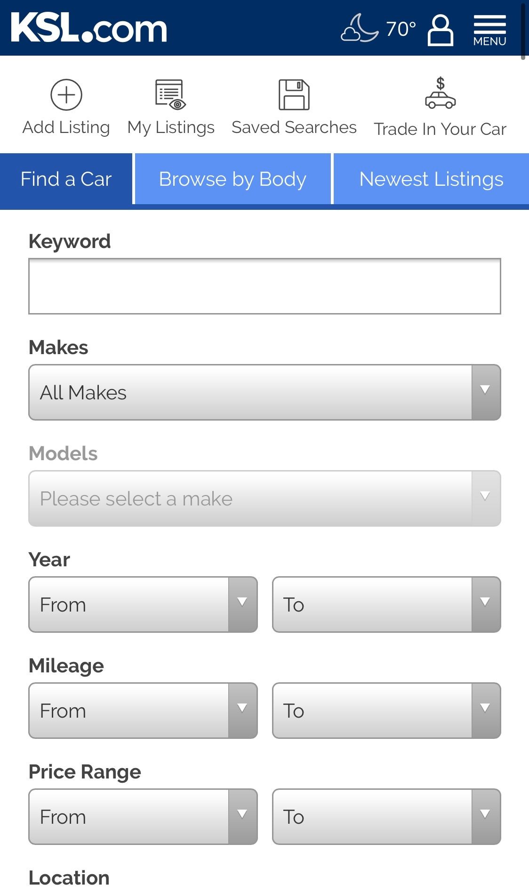

Hick's Law
KSL
https://www.ksl.com/ KSL is a great example of Hick's Law. When searching for cars it can be very overwhelming to look through the number of options that they have. As shown in the picture however, they give many options to filter the searches and limit the choices that they have.
Proximity
Pandora
https://www.pandora.com/Pandora music is a fantasic display of Proximity. When you go to their website you have exactly one button displayed to the user within very easy reach. The rest of the buttons are behind the menu on the top left which is much harder to reach for with a phone. This helps direct the user to the button that Pandora would like you to press.
Visual Hierarchy
Vasa
https://vasafitness.com/
I love the Heirarchy in the Vasa homepage. There is a big captivating thing in the center of their screen with a video of their gym playing behind it. The rest of their page flows naturally to move your attention from one thing to the next according to what they want you to look at first.